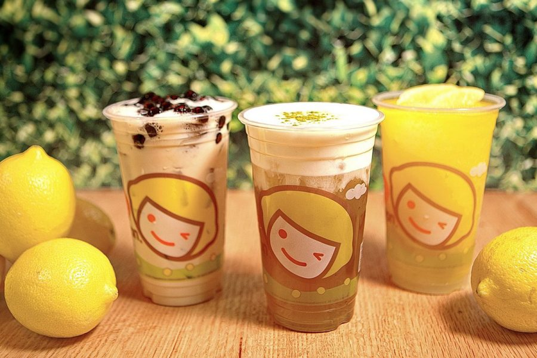
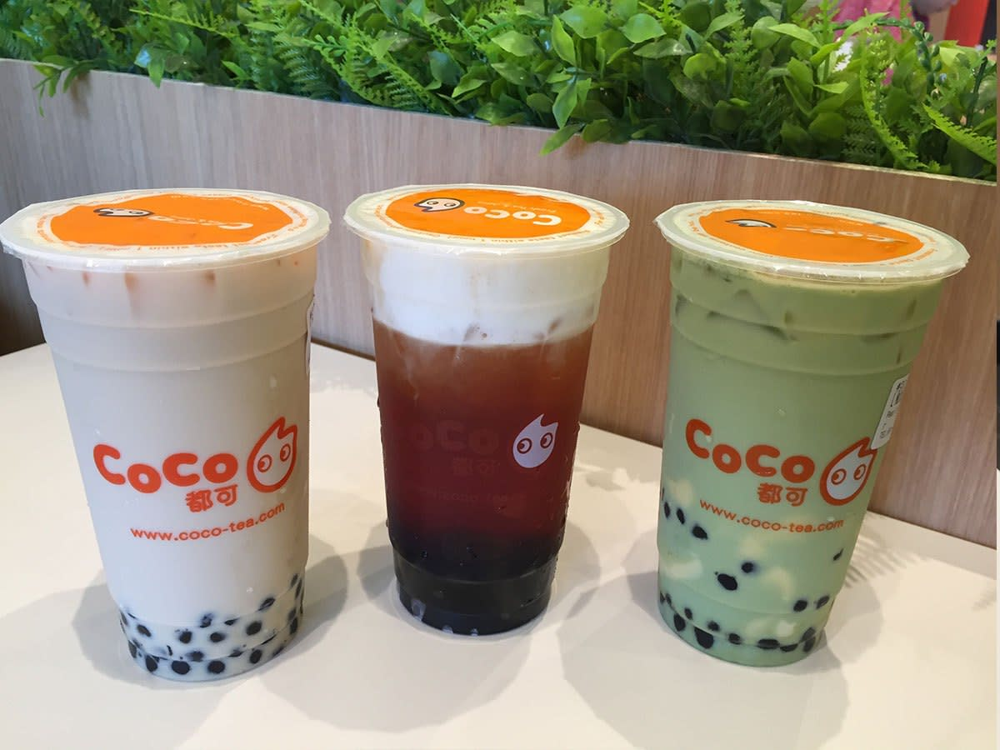

Hello, my name is Tha Huynh and I am a 17 year old girl. As you can tell from the title, this blog is going to be a bubble tea review on places that I have tried around my area. However, to start off here are some background information about myself to better understand my reviews!
I am a bubble tea enthusiastic. Growing up as a child, bubble tea was heavily incorporated into my life as I visited countless of asian deli shops as a kid. If you aren’t familiar with how Asian delis work, they are like bakeries. Rather selling just sweet bread, they sell varieties of food salty and savory foods that are very convienent to bring on the go. Not only, that but they sell beverages there too. As a deli shop, they would only provide very plain smoothie flavors such as avocado smoothie, strawberry, mango and etc. But as the year’s past, people started to experiment with other flavors with teas and smoothies resulting in boba to start trending. Many shops were opened with their own unique flavors and store themes to attract customers. With that, my interest started to grow and explore the many shops that have opened us to see what they had to offer.

Happy Lemon
Happy Lemon is the place to go on a summer heat wave. They offer many refreshing unique combination that will instantly freshen your day! There are many tea based drinks (so to those are lactose intolerant like me, this place will definitely be one of your favorites). Not only that, but their self-made taro balls are the best! Some of my friends say that they’re a bit weird in taste but I would say they’re absolutely amazing to those who are a big fan of taro. They’re bite sized and sweet, however the texture is chewy and a bit mushy. Overall, I’d would definitely recommend anyone to try out happy lemon!

Coco
Coco is also one of my favorite places to go! However, for someone who can’t really digest dairy, this places offers more milk-tea based drinks rather than tea, but that shouldn’t be a problem right? One thing that makes their place the best is the flavor in their topping. Their boba is very chewy and always had a coat of honey covered on it. Not only that but their egg pudding are the best! Compared to other bubble tea shops, Coco’s egg pudding are very well made with care. They are very soft in texture and always have a hint of a vanilla taste. Overall, I would recommend someone who can definitely handle their dairy to come here while those who can’t maybe come in a little while to try out their milk-tea based drinks!